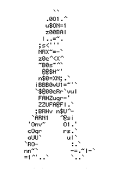

Instituto InfNet - WebDesign
HTML
HTML
HTML (acrônimo para a expressão inglesa HyperText Markup Language, que significa "Linguagem de Marcação de Hipertexto") é uma linguagem de marcação utilizada para produzir páginas na Web. Documentos HTML podem ser interpretados por navegadores. A tecnologia é fruto do "casamento" dos padrões HyTime e SGML. HyTime é um padrão para a representação estruturada de hipermédia e conteúdo baseado em tempo.
Um documento é visto como um conjunto de eventos concorrentes dependentes de tempo (como áudio, vídeo, etc.), conectados por hiper-ligações. O padrão é independente de outros padrões de processamento de texto em geral. SGML é um padrão de formatação de textos. Não foi desenvolvido para hipertexto, mas tornou-se conveniente para transformar documentos em hiper-objetos e para descrever as ligações.